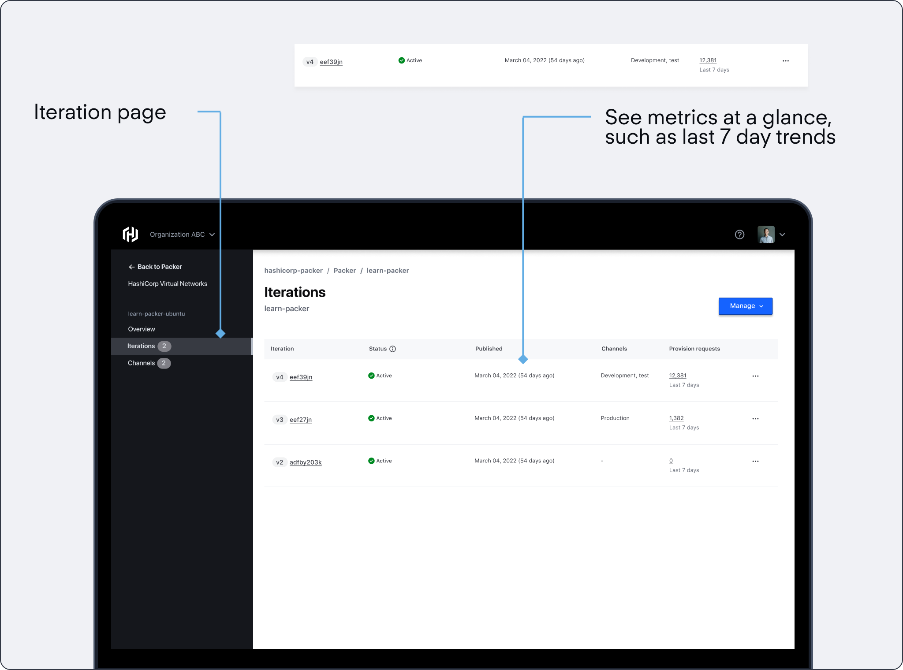
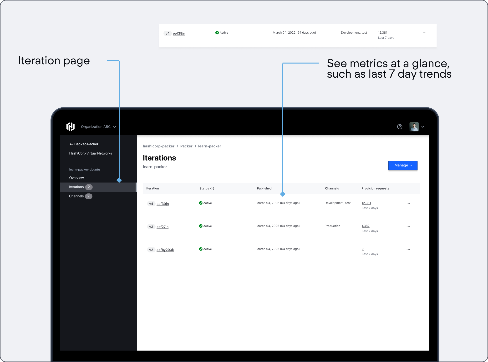

Delivering insights on machine images for devops practitioners.

HashiCorp
Q2 2022
Lead Product Designer, Researcher
Figma, Qualtrics
HashiCorp is a unicorn DevOps company that specializes in world class infrastructure products. They are the industry standard in Infrastructure as Code (IaC), and have produced many key products such as Terraform, Vault and Consul.
In 2022 interned on HashiCorp Packer, which is a tool used by software developers and IT professionals to create identical machine images or "packs" for different platforms, such as virtual machines, containers, or cloud instances. These images include the necessary software, configurations, and settings, ensuring consistency and reducing the potential for errors during deployment.
Practioners need image usage data to inform their machine image lifecycle management at scale. Currently, Packer does not have an easy way to extract this data. We want to provide information contextually to inform the practitioner and aid them in their decision making process.
We found a key gap in decision-making: users often lack the information they need, leaving them uncertain about what actions to take.
There was a general understanding from existing customer feedback that they lacked actionable data to inform them of how their iterations were being used. Often these metrics would help inform when and how an image's general software lifecycle would fare.
I was able to use HashiCorp's rich OSS community to my advantage, with survey outreach through reddit.
Unfortunately, what we lacked was the understanding of which metrics specifically that a user needed. Which necessitated research to fill in this gap.
Our team had a quick timeline, and needed a rapid research method that could quickly get over a critical sample size which we determined to be roughly over N=50, considering our user base. To meet this, we decided to take advantage of HashiCorp’s rich open source community, and use Reddit to source participants.
73
Sample Size
12k
Views
15
Metrics Found
From this research, we were able to collect 15 metrics of interest that we were able to stack rank and group into high level themes.

From here, I further workshopped the metrics with engineering and product to understand feasibility, how customers were solving this problem currently, and how these metrics could look.
To better understand which metrics actually fit together, I card sorted using subject matter experts, and then sent that to internal users of our products to validate whether the language was correct.
One hard part of designing a technical product is the fact that it is hard to understand the problem space as well as speak in terms that the end-user would understand, so this was extremely helpful.
To root this problem in outcomes, not features, I set high level goals that we wanted to target.
+20%
Net new iterations
+14%
Registry usage
-8%
Forced iteration
From here, I created high level wireframes to start critique sessions on information architecture and general workflows.
I ideated through low fidelity wireframes, where I iterated rapidly and sought feedback from our design team. I looked for ideas surrounding context of delivery, and high level user needs.


A useful exercise was rooting everything in 3 core CUJ's that stemmed from the customer research collected via survey.
In an essence, we needed to deliver insights in contextually to make sure that the user is aided in their decision making process. To do this, I delivered the information in 3 levels.
From this research and iteration through critique, I created core mock ups that I validated through user research.
Lets step through what a solution looks like:
 



A little motion to illustrate the point
+14%
Net new iterations
+7%
Registry usage
-4%
Forced iteration
The core takeaway was learning how to interact and design a highly complex tool that is used and relied on by thousands of people. That is not easy in any way, and the responsibility of the designer is to ensure that it works to user expectation.
Working here was definitely one of the top experiences of my career to this date. I really enjoyed getting to tackle an extremely complex problem space, especially when juxtaposed with my former experience at a marketing tech company. Here is some of my other key takeaways

If I had more time, I would probably want to consider adding additional granularity to results, and validating this solution with testing